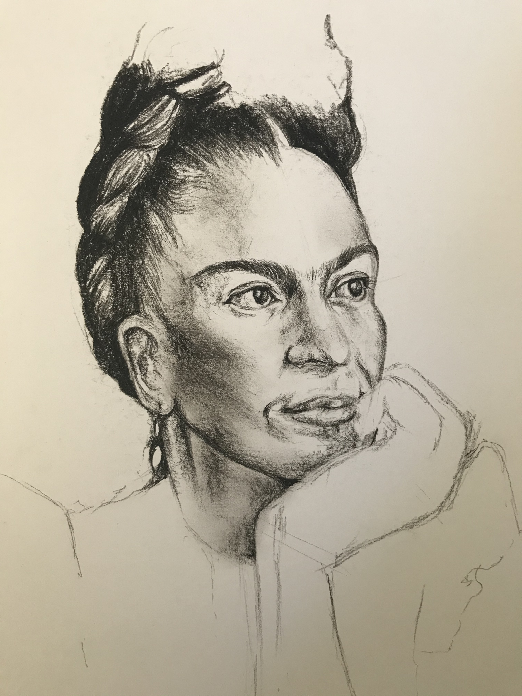
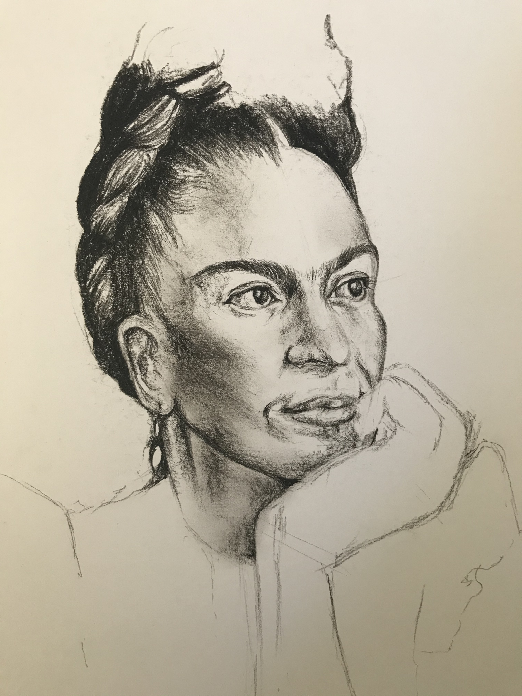

Bio
I'm a second year PhD student working with Alvitta Ottley in the Visual Data Analytics Group (VDAG)
at Washington University in St. Louis. My research interests are at the intersection of visual analytics, human behavior
and decision-making. My work focuses on how visualization can be used and adapted to encourage people to make better
decisions.
Prior to WashU, I graduated from Smith College in 2019 with a B.A. in Computer Science
and Architecture & Design. During my time in college, I spent a year in Paris at Université Paris Diderot and École Nationale Supérieure d'Architecture
de Paris Val-de-Seine (ENSAPVS) to explore my passion for art and architecture. I have always been interested in both science and arts,
and enjoy sketching portraits during my free time.
Publications
Let’s Gamble: How a Poor Visualization Can Elicit Risk Behavior
Melanie Bancilhon, Zhengliang Liu, Alvitta Ottley
IEEE Transactions on Visualization and Computer Graphics
Workshops & Posters
Icons are Best: Ranking Visualizations for Proportion Estimation
Zhengliang Liu, Melanie Bancilhon, Alvitta Ottley
IEEE VIS 2019
Experience
June - Sep 2019
Visual Data Analytics Group
Washington University in St. Louis, St. Louis MO
Analyzed the impact of visualization on perceptual differences, risk behavior and decision-making
Sep - Dec 2018
Human Computation & Visualization Laboratory
Smith College, Northampton MA
Text Mining to Uncover Gender representation patterns in Games of Thrones (GoT)
Jun - Aug 2018
Social Dynamics Team
Nokia Bell Labs, Cambridge UK
Uncovered Spatial and Temporal Patterns in Street Naming Conventions


 
